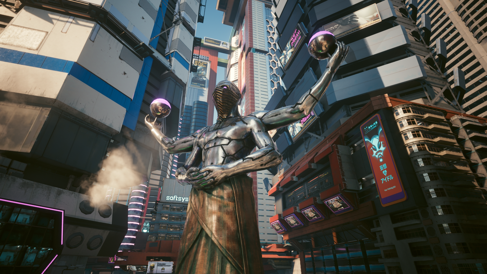
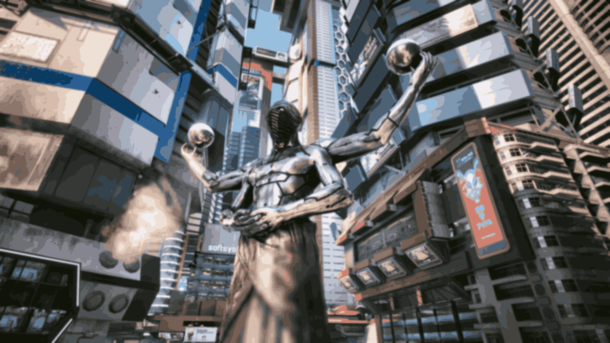
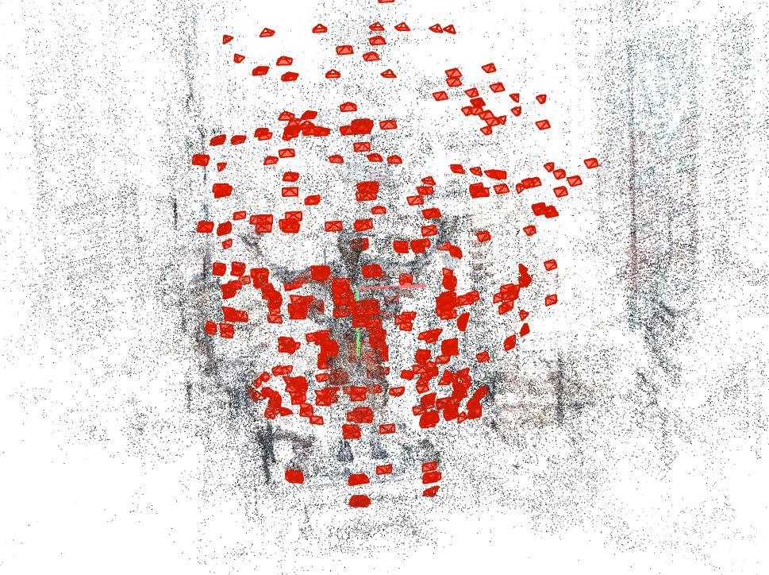
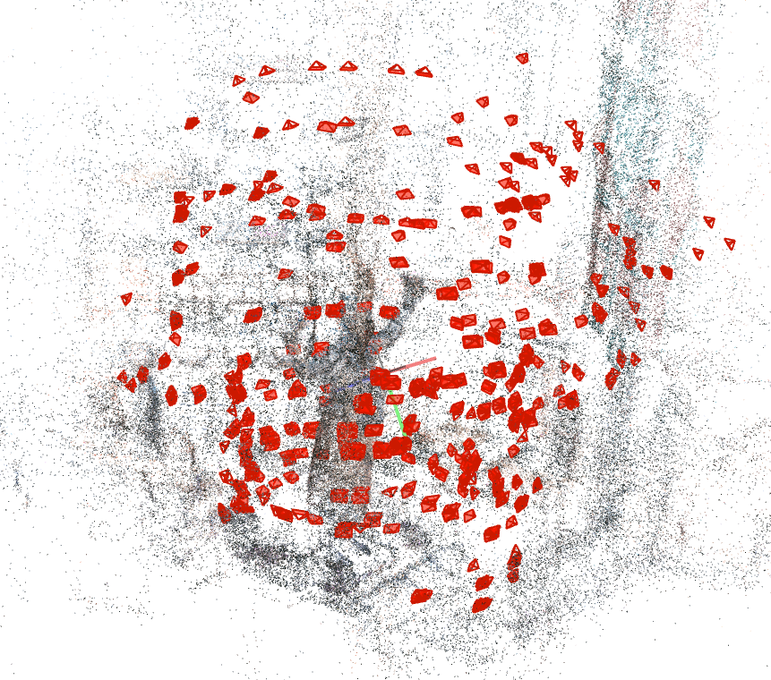
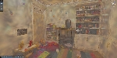
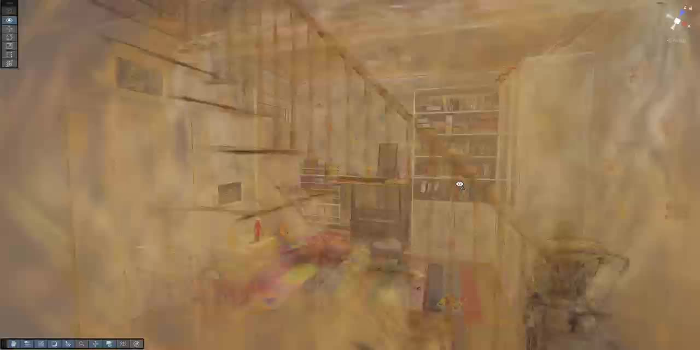

Overview
Building on Splatfacto, we make real-time 3D VR gaming possible, with potential extension to nearly all AAA titles. Using previously exported Gaussians as a starting point, we run a few optimisation steps on new data, adapting within 0.5 seconds. Moreover, 3DGS supports direct rasterisation, achieving 90 FPS rendering. Compared with traditional Neural Radiance Fields (NeRF)—which require hours of training and ray-marching—3DGS offers near-instant training and direct GPU rasterization, enabling high-quality real-time rendering.
For this project, we reconstructed a statue in Cyberpunk 2077 using 825 scenes captured from the game. You can find the video at the bottom of the page.
Pipeline
Data capture and calibration
We capture images from AAA games such as Cyberpunk 2077. Using Cyber Engine Tweaks, the official mod constructer, we capture the character’s position and view every two seconds, trigger an external Python script via trigger_screenshot.txt to grab screenshots with OBS Studio, and convert the recorded data.csv into COLMAP-format cameras.txt and images.txt.
Due to the complexity of the game graphics, we have applied blurring techniques to the images, including Gaussian blur and K-means clustering for color simplification, to reduce modeling difficulty.
|

|

|
Then we input all the files into COLMAP for sparse reconstruction to generate a 3D point cloud model.
|  |  |
Online adaptation
Starting from previously exported Gaussians, we run a few optimisation steps on newly arriving data and adapt within ~0.5 seconds to support real-time VR interaction and rendering.
3DGS direct rasterization
In the rasterisation process, we project Gaussian primitives into the target camera view for image-space rendering, which yields improved visual quality and stable real-time frame rates (up to ~90 FPS in VR).
Unity stylized compositing shader
In Unity URP, we implemented a sketch-style composite shader for 3D Gaussian Splatting that runs entirely in screen space (post-render). It applies tone quantization, Sobel edge detection, cross-hatching, and paper-grain noise, achieving real-time, customizable, VR-compatible illustrative effects.
Implementation details
Producer: data capture
- Transport recommendations: intra-host → shared memory via mmap ring buffer; cross-host → UDP or WebRTC DataChannel (PR-SCTP with partial reliability).
- Compression: use libjpeg-turbo (JPEG) or libwebp (WebP). 720p is sufficient for training.
- Pose: unify world coordinates and camera intrinsics/extrinsics (fx, fy, cx, cy + [R|t]) and attach per-frame timestamps.
Python capture & UDP sender (minimal):
# producer_send.py
import cv2, socket, struct, json, time
from turbojpeg import TurboJPEG
jpeg = TurboJPEG()
sock = socket.socket(socket.AF_INET, socket.SOCK_DGRAM)
DEST = ("127.0.0.1", 50051)
def send_frame(frame_bgr, intr, extr, seq):
jpg = jpeg.encode(frame_bgr, quality=85) # compress
header = {
"seq": seq, "ts": time.time_ns(),
"intr": intr, # {"fx":..., "fy":..., "cx":..., "cy":...}
"extr": extr, # {"R":[9], "t":[3]}
}
h = json.dumps(header).encode("utf-8")
pkt = struct.pack("!I", len(h)) + h + jpg
sock.sendto(pkt, DEST)
# example capture
cap = cv2.VideoCapture(0) # or frames from the game render pipeline
seq = 0
while True:
ret, frame = cap.read()
if not ret: break
intr = {"fx":800,"fy":800,"cx":640,"cy":360}
extr = {"R":[1,0,0,0,1,0,0,0,1], "t":[0,0,0]}
send_frame(frame, intr, extr, seq)
seq += 1
time.sleep(1/5) # 5 FPSIncremental training (Splatfacto/gsplat modifications)
- Data ingestion and buffering: build a lock-free ring buffer (or asyncio queue) to store the latest N seconds of frames (e.g., a 2–4 s window). Trigger policy: fire a tuning step every 10 frames or 0.5 s.
- Optimize only Gaussians in relevant regions: project the new frame to screen, compute a reprojection error heatmap, back-project and cluster to hit Gaussian IDs, then set only those parameters to requires_grad=True and freeze the rest. Typical parameters: μ(xyz), scale(3), rot(quat4), opacity(1), sh(N) with SH degree 0–3. In Splatfacto these are PyTorch tensors; use masked indexing to select subsets.
- Optimizer and steps: Adam with a small learning rate (1e-3 → 1e-4), ~100 steps per round. Loss = L2 (or L1) on new frames + detail/edge-weighted terms + regularization (anti-drift). Density control by new-view statistics only: growth by cloning/perturbing around high-gradient or sparse-coverage projections; pruning by marking long-unhit/low-contribution Gaussians and removing in batches.
- Versioning and persistent IDs: assign a global ID per Gaussian; record adds/deletes; keep the last snapshot/hash for diffing.
Incremental training main loop:
# trainer_incremental.py
opt = torch.optim.Adam(params=get_frozen_aware_params(model), lr=1e-3)
last_snapshot = None
SEQ = 0
while True:
batch = ring_buffer.pop_last_10_frames_or_timeout(0.5)
if not batch: continue
# select relevant Gaussians
active_ids = select_gaussians_by_reproj_error(model, batch)
model.set_trainable_subset(active_ids) # others requires_grad=False
for step in range(100):
loss = render_loss_on_batch(model, batch)
opt.zero_grad(set_to_none=True)
loss.backward()
clip_gradients(model, max_norm=1.0)
opt.step()
# local density control (grow/prune)
grow_ids, prune_ids = density_control(model, batch)
apply_grow_prune(model, grow_ids, prune_ids)
# compute diff
diff = compute_param_diff(model, last_snapshot, eps_pos=1e-3, eps_rot=1e-3, eps_sh=2e-3)
pkt = pack_diff_binary(diff, seq=SEQ)
send_udp(pkt)
last_snapshot = take_lightweight_snapshot(model)
SEQ += 1Shaders
The sketch‑style effect is achieved via a screen‑space composite shader. Once all Gaussians have been rendered into a temporary render target (_GaussianSplatRT), the composite shader processes this texture in a full‑screen pass and produces the final output. The algorithm comprises several stages:
Greyscale quantisation – The RGB colour of each pixel is converted to linear space and then to a single luminance value. This value is quantised into a specified number of tone bands (e.g. 4–8), producing flat regions of consistent brightness reminiscent of tonal blocks in pencil sketches.
Sobel edge detection – A Sobel operator computes the gradient magnitude of the luminance. Pixels with high gradient are considered edges. A smooth threshold and softness parameter control the strength of the resulting contour lines; edges are used later to darken outlines and emphasise structure.
Cross‑hatching overlay – For darker quantised tones, the shader overlays sets of parallel hatch lines at multiple angles (e.g. 0°, 45°, 90°, 135°). Each line set is generated procedurally using screen‑space UV coordinates. Darker areas receive more hatch layers, while lighter areas receive few or none. Parameters allow users to adjust hatch density and strength.
Paper grain noise – A simple pseudo‑random noise function adds small perturbations to the luminance, simulating paper grain. This texture varies per pixel and can be scaled via a noise strength parameter.
Compositing and output – The quantised greyscale image, edge mask, hatch overlays and noise are combined. The edges multiply the result to darken outlines. The final colour is multiplied by a tint (default white) to allow for tonal changes. The shader uses the blend mode Blend One Zero, which overwrites the colour buffer, ensuring the effect is visible even when no opaque background is drawn.
The shader runs as the last step in the URP renderer, after all opaque and transparent passes, to avoid being overwritten by subsequent features. Because the algorithm operates only on the screen buffer, its complexity is independent of the number of Gaussians rendered.
|  |  |
Results and performance
- Direct rasterisation reaches around 90 FPS on VR devices.
- We improved Splatfacto by using high-order spherical harmonics to guide low-order harmonics (shortening rendering time) and by applying lossless octree compression to reduce the runtime burden on VR devices. These yield roughly a 3× speedup in visual rendering for VR.
Limitations and outstanding work
Minor issues remain in optimising newly added Gaussians, so a fully seamless in-game video is not yet available. We will further improve the stability and efficiency of online incremental optimisation.
References
- Nerfstudio: https://github.com/nerfstudio-project/nerfstudio
- Unity Plugin: https://github.com/clarte53/GaussianSplattingVRViewerUnity
Contributions
- Yuanchen Li: Implemented incremental development of Splatfacto, improving it by using high-order spherical harmonics to guide low-order harmonics, thereby shortening rendering time, and by applying lossless octree compression to reduce the runtime burden on VR devices.
- Yihong Zhai: Contributed to the composite shader and collaborated with Yuanchen Li to implement the initial functionality for immersive viewing of 3D Gaussian scenes in virtual reality .
- Songyan Li: Developed tools to generate image dataset and relevant pose information automatically, exporting COLMAP-compatible files for efficient 3DGS model training.
- Yanshi Liang: Configured and optimized a high-performance cloud GPU environment, managed all necessary dependencies, and successfully ran Splatfacto to train the 3DGS model.